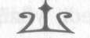

BÖLÜM ON YEDİ
BİRKAÇ MİLYONCUK KİLO
ALIYORUM
En korkunç şey şuydu: irsi benzerliği görebiliyordum.
Atlas'ta da Zoe'deki o aynı asil çehre, Zoe bazen çok kızgın olduğunda yüzüne yerleşen o aynı soğuk ve mağrur ifade vardı. Gerçi Atlas binlerce kez daha şeytani gözüküyordu.
Aslında Zoe'de nefret ettiğim her şeyin hepsi ondayken, sevdiğim şeylerin hiçbiri onda yoktu.
"Artemis'i bırak," dedi Zoe inalla.
Atlas zincirlenmiş tanrıçaya yürüyüp yaklaşü. "Belki de göğü onun sırtından almak istersin o halde? Lütfen buyur."
Zoe konuşmak için ağzını açınca Artemis araya girdi:
"Hayır! Sakın kabul etme Zoe! Seni bundan men ederim."
Atlas yılışık yılışık sırıttı. Artemis'e doğru eğildi ve yüzüne dokunmaya çalıştı ama tanrıça elini ısırdı, az kalsın parmaklarını da koparıyordu.
"Hahahaa!" dedi Atlas kıkırdayarak. "Gördün mü kızım?
Tanrıça Artemis yeni işini sevdi. Sanırım her Olimposluya sırayla taşıtmalıyım göğü. Hele bir Tanrı Kronos yeniden hüküm sürsün, burası sarayımızın merkezi olacak. Şu güç-
süzlere alçakgönüllülük nedir öğreteceğiz."
Annabeth'e baktım. Umutsuzca bana bir şeyler anlatmaya çalışıyordu. Kafası ile Luke'u işaret ediyordu. Ama ne dediğini anlamadığımdan, tek yapabildiğim bakışlarına kar-256
NymphE
şılık vermekti. Daha önceden fark etmemiştim ama Annabeth'te bazı şeyler cidden değişmişti. Sarıya kaçan saç-
larına kırlar düşmüştü.
"Göğü sırtlamaktan," diye fısıldadı Thalia, sanki zihnimi okumuştu. "O ağırlığı yüklenmek canını alabilirdi."
"Anlamıyorum," dedim. "Artemis neden göğü yere bırakmıyor?"
Atlas kahkahalara boğuldu. "Ufaklık, kafan ne kadar az çalışıyor. Gökle yer ilk burada kavuştu. Uranüs ve Gaia önce kudretli çocuklarını, Titanları ilk buraya bıraktı. Gök hâlâ yeri kucaklamaya çalışıyor burada. Birisi onları ayırmalı, aksi halde burayı yerle bir ederler. Dağ anında dümdüz olur, dağı da yüzlerce fersah içerisindeki her bölge izler. Bu yükü sırtlandın mı kaçış yok; taşıyacaksın." Atlas gülümsedi.
"Tabii, birisi senden yükü alırsa, o zaman başka."
Bize yaklaştı, Thalia'yı ve beni inceledi. "Demek bu çağın en iyi kahramanları bunlar ha? Sinek vızıltısı."
"Dövüş bizimle," dedim. "O zaman görürsün gününü."
"Tanrılar sana hiçbir şey öğretmedi mi çocuk? Bir ölüm-süz sıradan bir ölümlüyle doğrudan savaşmaz. Asaletimize yakışır mı böylesi aşağılık bir iş? Benim yerime Luke ezecek seni."
"Demek sen de korkağın tekisin," dedim.
Atlas'ın gözleri nefretle parıldadı. Zor da olsa dikkatini Thalia'ya verdi.
"Sıra sana gelince Zeus kızı, belli ki Luke senin hakkında epey yanılmış."
"Yanılmadım," dedi Luke güç bela. Son derece güçsüz görünüyordu, ağzından her sözcüğü zorlanarak, acı çekerek çıkartıyordu. Ondan o kadar nefret etmeseydim, Luke için üzülebilirdim. "Thalia, hâlâ bize katılabilirsin. Ophio-257
NymphE
taurus'u çağır. Sana gelecek. Bak!"
Elini salladı ve yanımızda su dolu bir havuz belirdi. Kara mermerlerle çevrelenmiş bu yuvarlak havuz, Ophiotaurus'un sığabileceği kadar büyüktü. Bessie'yi o havuzun içinde görebiliyordum. Aslında ne kadar bunu düşünürsem, Bessie'nin möölemesini duyabilecek gibi oluyordum.
Sakın bunu düşünme! Birden Kıvırcık'ın sesi zihnimde belirdi: duygubağı! Hissettiklerini hissedebiliyordum. Paniğe kapılmak üzereydi. Bessie'yi kaybediyorum. Düşüncelerini engelle!
Kafamın içini bomboş yapmaya çalıştım. Basketbol oyuncularını, kaykayları, annemin dükkanındaki türlü türlü şekerleri düşünmeye çalıştım. Yani, Bessie haricindeki her şeyi.
"Thalia, Ophiotaurus'u çağır," dedi Luke ısrarla. "Tanrı-
lardan da kudretli olacaksın."
"Luke..." Thalia'nın sesi kederliydi. "Sana ne oldu?"
"Konuştuğumuz onca şeyi unuttun mu? Hani tanrılara lanet okuduğumuz zamanları? Babalarımız bizim için hiçbir şey yapmadı. Dünyaya hükmetmeye hakları yok!"
Thalia hayır anlamında kafasını salladı. "Annabeth'i serbest bırak. Bırak gitsin."
"Bana katılırsan," diye bir yemine başladı Luke "her şey eskisi gibi olacak. Üçümüz beraber olacağız. Daha iyi bir dünya için savaşacağız. Lütfen Thalia, eğer kabul etmezsen..."
Sesi cılızlaştı. "Bu benim son şansım. Eğer kabul etmezsen diğer yola başvuracak. Lütfen."
Ne demek istediğini anlamasam da sesindeki korku yeterince gerçekti. Luke'un tehlikede olduğuna inandım. Yaşamı, Thalia'yı davasına katmaya bağlıydı. Ve sanırım Thalia da 258
NymphE
buna inanacaktı.
"Yapma Thalia," diyerek Zoe onu uyardı. "Onlarla dövüş-
meliyiz."
Luke yeniden elini salladı ve bir ateş belirdi. Bu tıpkı kamptaki gibi bronz bir mangaldan tüten ateşti: kurban ateşi.
"Thalia," dedim. "Hayır."
Luke'un arkasındaki altın lahit parıltılar saçmaya başladı.
Bir yandan etrafımızı saran siste çeşitli görüntüler belirdi: Kara mermer duvarlar yükseliyor, harabeler eksiksiz yapı-
lara dönüşüyor, etrafımızda dehşetengiz ama güzel bir saray yükseliyordu. Korku ve gölgelerden oluşan bir saraydı bu.
"Othyrs Dağı'nı tam burada kuracağız," diye söz verdi Luke, sesi o kadar zorla çıkıyordu ki neredeyse kendi sesi değildi. "Bir kez daha Olimpos'tan daha kudretli, daha yüce olacak. Bak Thalia. Biz zayıf değiliz."
Okyanusa işaret etti ve yüreğim sıkıştı. Prenses Andromeda'nın demir attığı sahilden yukarı, dağın yamacında ilerleyen muazzam bir ordu vardı. Drakonlar, Laistrygonialılar, canavarlar, melezler, cehennem tazıları, harpyalar ve adlarını bile bilmediğim türlü şey. Tüm gemiyi boşaltmış
olmalılardı çünkü geçen yaz gördüğümden daha fazlası, yüz-lercesi vardı. Ve bize doğru yürüyorlardı. Birkaç dakika içinde burada olacaklardı.
"Bu yalnızca sonradan olacakların tadını almanız içindi,"
dedi Luke. "Yakında Melez Kampı'nı basmaya hazır olaca-
ğız. Ve ondan sonra da Olimpos'un ta kendisini. Tek gereken senin yardımın."
Dehşet verici bir an boyunca Thalia tereddüt etti. Luke'a baktı, gözlerinden acı çektiği okunabiliyordu, sanki dünyada tek istediği ona inanabilmekti. Sonra mızrağını kaldırdı. "Sen 259
NymphE
Luke değilsin. Artık seni tanıyamıyorum."
"Evet, tanıyorsun Thalia," dedi Luke yalvarırcasına.
"Lütfen. Beni... Onu seni yok etmeye zorlama."
Vakit yoktu. Ordusu tepeye vardığında ezilecektik.
Annabeth'in gözlerine baktım yine. Kafasını salladı.
Thalia'ya ve Zoe'ye de baktım; böyle dostlar olduktan sonra, dövüşerek ölmek dünyanın en kötü şeyi sayılmazdı.
"Şimdi!" dedim.
Hep beraber hücum ettik.
Thalia doğruca Luke'a saldırdı. Kalkanı o kadar güçlüydü ki ejder-kadın muhafızlar altın lahdi düşürerek korku içinde kaçıştılar ve Luke'u tek başına bıraktılar. Ama hastalıklı haline karşın Luke hâlâ hızlı kılıç kullanıyordu. Vahşi bir hayvan gibi kükredi ve karşı saldırıya geçti. Adı Arkadan Bıçaklayan olan kılıcıyla Thalia'nm kalkanını karşıladı, aralarında şimşekten oluşan bir küre patladı ve havayı sarı güç filizleri ile kızarttı.
Bana gelince, ben de hayatımdaki en aptalca şeyi yaptım ki hayatımda bugüne dek yaptıklarımı düşünürseniz, cidden aptalca bir şey olduğu ortada: Titan Tanrı Atlas'a saldırdım.
Ona yaklaşırken bana gülüyordu. Ellerinde devasa bir cirit belirdi. İpek takım elbisesi eriyip tam bir Yunan savaş
zırhına dönüştü. "Gel bakalım o zaman!"
"Percy!" dedi Zoe. "Dikkat et!"
Beni neye karşı uyardığını biliyordum. Kheiron bana uzun zaman önce söylemişti. Ölümsüzler kadim yasalarca kısıtlanır. Diğer yandan kahramanların bazı ayrıcalıkları var.
İstedikleri yere gider, istediklerine meydan okurlar, tabii bunu yapabilecek kadar cesur ve güçlü oldukları sürece. Ne var ki ben bir kere saldırdıktan sonra Atlas bana istediği gibi, 260
NymphE
tüm kudretiyle saldırmakta özgürdü.
Kılıcımı savurdum, Atlas da ciridinin sapıyla beni yana savurdu. Havada uçtum ve kara bir duvara çarptım. Duvar artık Sis'ten yapılma değildi. Tuğla üstüne tuğla birikiyor, saray yükseliyordu. Gerçeğe dönüşüyordu.
"Budala!" Zoe'nin oklarından birini yana savururken Atlas neşeyle haykırdı. "Sırf o önemsiz savaş tanrısına meydan okudun diye bana karşı durabileceğini mi sandın?"
Ares'ten bahsedince sanki içim titredi. Sersem halimden kurtuldum ve tekrar hücuma geçtim. O su havuzuna vara-bilseydim, gücümü ikiye katlayabilirdim.
Ciridin ucu bir orak gibi bana savruldu. Dalgakıran'ı kaldırdım, planım ciridin sapını kılıcımla kesmekti ama kolum kurşun gibi ağırlaşmıştı. Kılıcım bir anda bir ton ağırlığına ulaşmıştı sanki.
Ve uzun zaman önce Los Angeles sahilinde Ares'in beni uyardığını hatırladım: en çok ihtiyaç duyduğun anda kılıcın seni yarı yolda bırakacak.
Şimdi olmasın! diye yalvarsam da faydası yoktu. Eğilmeye çalıştım ama cirit göğsüme vurdu ve bez bebek gibi beni havaya uçurdu. Yere çarpınca başım dönmeye başladı.
Ayağa kalktım ve hâlâ göğün ağırlığı altında ezilmekte olan Artemis'in ayaklarının dibinde olduğumu gördüm.
"Kaç oğlum," dedi bana. "Kaçmalısın!"
Atlas ağır ağır bana doğru geliyordu. Kılıcım ortalıkta değildi. Uçurumun kenarına yuvarlanmıştı. Tekrar cebimde belirebilirdi, birkaç saniye beklesem yeterdi ama artık bir önemi yoktu. O zamana dek ölmüş olurdum. Luke ve Thalia iki iblis gibi dövüşüyorlardı, etraflarında şimşekler çakı-
yordu. Annabeth yerdeydi, ellerini kurtarmak için boş yere uğraşıyordu.